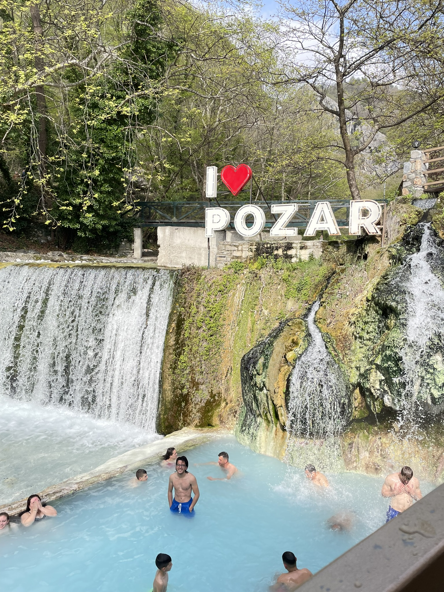

Il-biża' li tipprova tgħix ħajja kompluta
<-- Lura għall-paġna prinċipaliMiktub fis-26 ta' Marzu, 2026
X’inhu l-punt tal-ħajja? Din hija mistoqsija ferm diffiċli biex twieġeb, u hija ħafna iktar diffiċli biex issib risposta diretta. Ħaġa li taffaxxinani hi li avolja din il-mistoqsija tippersisti bħala sentiment ambigwu f’kullħadd, r-rieda li ngħixu ħajja kompluta tibqa’ f’ruħna sal-aħħar.
Imma xi tfisser li tgħix ħajja kompluta? Sfortunatament, jiena waqajt fin-nassa li niffissa fuq din id-domanda. Il-verità hi li probabbli qatt mhu ħa nkun naf, u jekk insir naf, ser ikun meta nkun wisq xiħ biex proprja ngħixha. Hawnhekk fejn tidħol il-biża’. Kif tista’ tkun ċert illi dak li qiegħed tagħmel m’intix tagħmlu għalxejn? Kif tista’ tassigura ruħek illi mhux se jiddispjaċik ta’ dak li qiegħed tagħmel?
Għamilt żmien fejn f’kull attività li għamilt, hi li hi, kbira kemm hi kbira, bqajt preokkuppat b’dawk l-ideat jiġru ġo moħħi. Tant kemm kont anzjuż biex “ngħix” illi spiċċajt ma kont qiegħed ngħix xejn.

Dawk il-ħsibijiet qatt mhuma se jitilqu minn moħħi, u naħseb li sa ċertu punt huwa tajjeb li ġieli jkolli ħabel biex iżommni. Però, tgħallimt nara s-sbuħija f’dan it-taħwid kollu. Naħseb li ma tieħux gost kieku ngħidlek kif il-film jew serje li qiegħed tara jispiċċa qabel ma teħilsu. L-istess għandek tħossok fuq ħajtek. Nissoponi li kieku xi ħadd jgħidli x’għandi nagħmel biex inħossni komplut, nispiċċa nkun qisni priġunier ipprogrammat bla awtonomija personali ta’ xejn.
M’għandi tweġiba għall-ebda ħaġa li semmejt, però, jiġri x’jiġri, jiena grat li nista’ nipprova ngħix ħajti kif nara li hi l-aħjar. Kemm għandna xortina tajba li għandna l-opportunità li nagħmlu dak kollu li nixtiequ, anke jekk jiddispjaċina wara. Iva, forsi qiegħed ngħix ħajti bl-agħar mod possibbli, u eħe, forsi ħa jħossni ddispjaċut mmens wara, imma għallinqas kelli ċ-ċans li nħoss xi ħaġa.